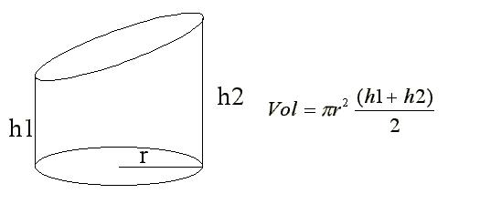

Objetivos:
- Que apliques los conocimientos sobre declaración de variables
en el desarrollo de un programa.
- Que seas capaz de utilizar las instrucciones de captura y desplegado
de información, así como el uso de operadores

Forma de
trabajo:
Actividad individual

Tiempo estimado:
90 minutos

Instrucciones:
- Desarrolla e implementa, en
conjunto con el profesor, los siguientes algoritmos y programas.
El siguiente programa lee una variable de tipo entera y escribe
el valor de "res" en la pantalla. Utiliza este programa como ejemplo para
desarrollar tu laboratorio.

Sección
1.- Operaciones con variables "Enteras"
Escribe un programa completo en C, que convierta un tiempo expresado
en segundos al formato de horas, minutos y
segundos. Considera que el valor del tiempo en
segundos es proporcionado por el usuario.
Por ejemplo para un tiempo de
8243 segundos se desplegará lo siguiente:
-
Horas:
2
- Minutos:
17
- Segundos:
23
Solicite un tiempo en segundos
y calcule la cantidad de horas, minutos y segundos. Despliegue los resultados
en pantalla.
Variables utizadas : tiempo, horas, minutos, segundos y residuo.
Sección 2.- Operaciones con variables de "Punto Flotante"
Escribe un programa completo en C que calcule el volúmen
(V) de un cilíndro recto de sección oblicua. Los valores
dados por el usuario son el radio (r) y las alturas (h1 y
h2) del cilíndro . El resultado obtenido (volumen)
debe ser desplegado en la pantalla.

El valor de PI debe ser declarado como una constante 3.141592.
Guardar esta sección con el nombre: A2_Matricula.c

Especificaciones de
entrega:
- Formato de entrega:
c
- Nombre de los
entregables:
A1_matrícula.c y A2_matrícula.c
- Medio de entrega:
Se entrega en Canvas en la sección de Laboratorio:
Cálculos
Instrucciones para enviar tus archivos por Canvas:
- Haz clic en el botón de
Tareas. Haz clic en la actividad de
Laboratorio: Cálculos.
- Haz clic en el botón de
Entregar tarea.
- En el fólder de Carga
del archivo, haz clic en el botón de Examinar
y localiza el archivo *.py. Si necesitas agregar más
archivos, haz clic en +Aguegue otro archivo, haz
clic en el botón de Examinar y localiza el otro
archivo *.py.
- Cuando hayas terminado de
subir tus archivos, haz clic en el botón de Entregar
tarea y listo!!
|